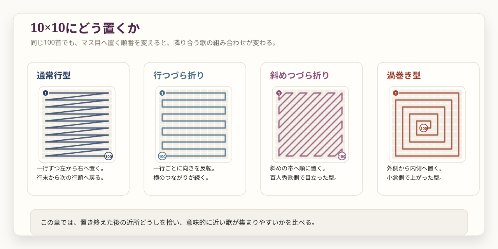
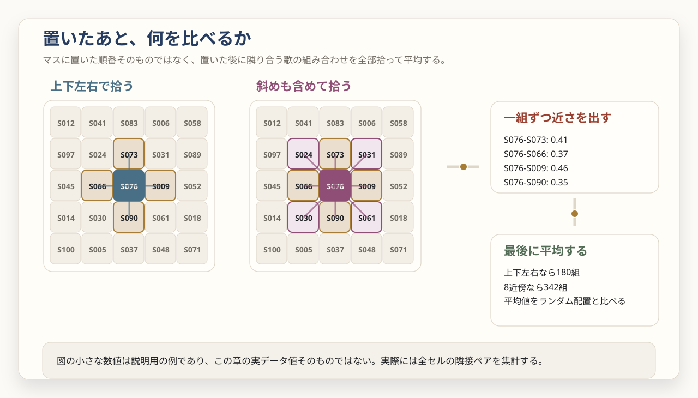
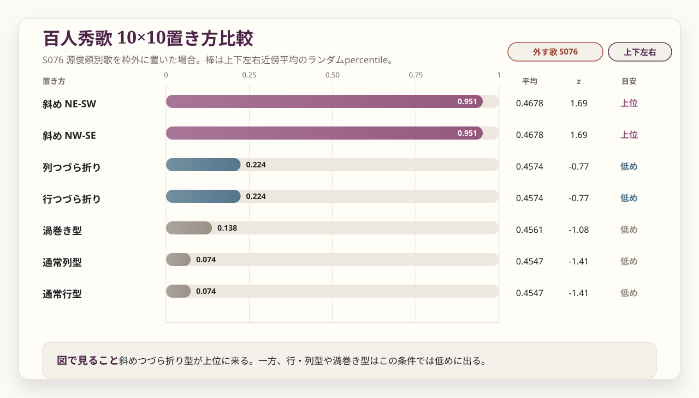
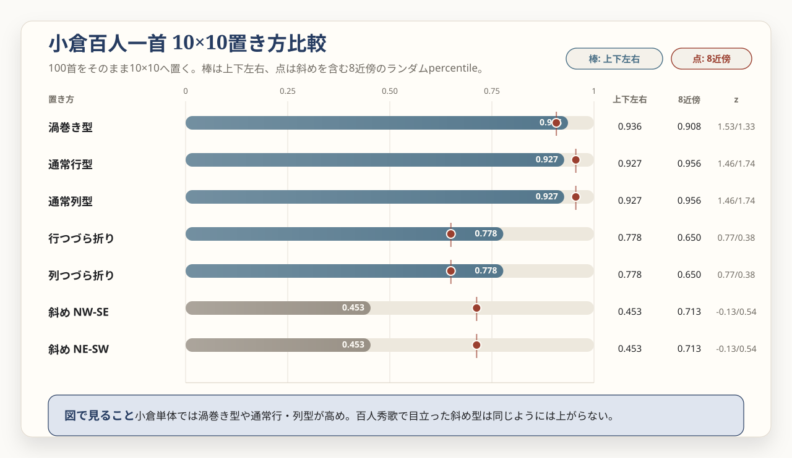
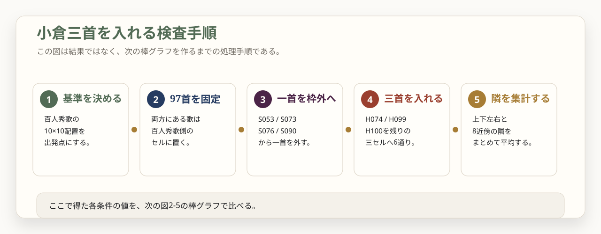
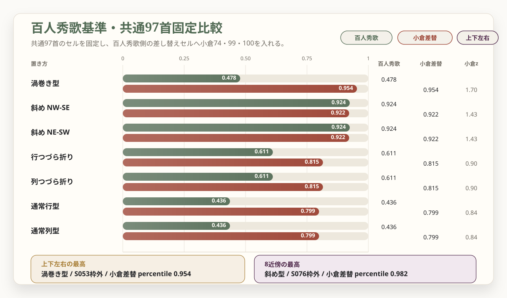

こぼれる一首、
入ってくる三首
百人秀歌は101首ある。ところが10×10の枡目に置けるのは100首だけである。では、どの一首を枠外に置くと、残りの100首はいちばんまとまって見えるのか。さらに、小倉百人一首へ移るとき、どの三首が入ってくるのか。第2章では、この出入りを一続きの事件として読む。
1. 本章の問い
第1章では、小倉百人一首と百人秀歌を意味空間に置き、順番、差し替え、10×10配置を一通り眺めた。そこから見えてきたのは、全体が一気に解けるような派手な結論ではない。むしろ、局所的に妙な山が立つ場所だった。
その一つが、百人秀歌の10×10配置である。ここで扱う百人秀歌は101首ある。10×10の枡目に入れるには、どうしても1首が余る。そこで、1首ずつ外して残りの100首を並べたところ、源俊頼朝臣の百人秀歌側の別歌、S076が目を引いた。
ただし、この話は「余る一首」だけで終わらない。百人秀歌から小倉百人一首へ視点を移すと、H074 源俊頼朝臣、H099 後鳥羽院、H100 順徳院という三首が入ってくる。つまり、S076を外す話と、小倉側の三首を入れる話は、同じ差し替えを別方向から見ている。
だからこの章は「S076こそ鍵だった」と叫ぶ章ではない。どの条件ならS076が浮かび、どの条件では別の歌も同じくらい浮かぶのか。そのうえで、小倉側の三首がどのように入ってくるのか。謎は、当てるよりも、正しい形に切り出す方が難しい。
もう少し言えば、この章で見たいのは、ミステリーの答えそのものではない。ほとんど同じ歌群なのに、置き方を変えると見え方が変わる。数首の差し替えが、マス目上では別の隣関係を作る。そのとき、なぜ「ここには何かあるのではないか」という感じが立ち上がるのか。第2章は、その発生条件を見にいく章である。

2. なぜ10×10を見るのか
百人秀歌については、二首一組、あるいは二首一対の歌合形式に近いものとして説明されることがある。これはまず、第1首と第2首、第3首と第4首、第5首と第6首を二首ずつ見るような発想である。第1章ではこの素直な切り方を試したが、本文埋め込みだけでは強いまとまりは出なかった。[D-5][L-5]
そこで、直線の順番から少し離れてみる。百人秀歌をめぐっては、10×10の枡目配列を扱う研究があることまでは確認できる。ただし、ここで行うのは、その図や配置規則の再現ではない。斜めつづら折り型などの配置は、10×10という論点を手がかりに作った、探索用の仮説モデルである。[L-3]
それでも、10×10は試す価値がある。なぜなら、百人秀歌は小倉百人一首とほとんど同じ歌群を持ちながら、数首が違うからである。もし、百人秀歌を一つの作品として見たときに配列上のまとまりがあるなら、どの一首を外すとそのまとまりが保たれやすいのか、という問いが立つ。
ここでいう10×10は「古い本にそう置けと書いてある配列」ではない。10×10配置が議論されていることを手がかりにした、探索用の置き方である。この区別は、章の最後まで重要である。
3. 検査のやり方
検査そのものは機械的である。まずS001を外し、残り100首を10×10に並べる。次にS002を外し、同じことをする。これをS101まで繰り返す。つまり、101通りすべてについて、「この一首を外したら、配置全体は少しまとまるか」を見た。
ここで比べているのは、歌順で前後に来る二首だけではない。まず、残った100首をある規則で10×10のマスへ置く。通常行型なら一行ずつ置く。斜めつづら折りなら斜めの帯へ置く。渦巻き型なら外側から内側へ置く。つまり、最初に決めるのは、歌をどのマスに入れるかという「置き方」である。
置き終えたら、今度はマス目の上で隣り合う歌のペアを全部拾う。上下左右だけを隣とするなら、10×10では180組になる。斜め隣も含める8近傍なら342組になる。この一組一組について、意味空間でどれくらい近いかを計算し、最後に平均する。
ここでは、10×10を普通の紙面として扱う。つまり、右端と左端、上端と下端はつながっていない。角の歌も比較から外れるわけではないが、上下左右だけを見る場合、隣は二つだけになる。辺の歌は三つ、内側の歌は四つである。そのため、角や端に置かれた歌は、平均値への関わりが相対的に小さくなる。この章の数値は、その開いたマス目の上での比較である。
だから、この検査で見ているのは「この置き方にすると、近所のマスに意味的に近い歌が集まりやすいか」である。置き方が変われば、同じ100首でも隣として拾われるペアが変わる。そこに差が出るかを見る。


検査条件表に出てくる数字の意味
近さは cosine similarity で測る。値が高いほど、本文条件では近い向きを向く歌どうしだと読む。第2章も、特に断らない限り text-embedding-3-small の結果を見る。ただし10×10検査の類似度は、第1章の original_kana 条件ではなく、百人秀歌側と小倉側をそろえるための作業用本文表記 original 条件で再計算した値である。そのため、同じペアでも第1章の隣接表と小数値が一致しない場合がある。
percentile は、ランダムな比較と比べた位置である。たとえば0.924なら、ランダムに作った比較条件の約92.4%より高かった、という意味になる。z-score は、ランダム平均からどれくらい離れているかを見る別の尺度である。
| 数字 | この章での読み方 | 近いのはどちらか |
|---|---|---|
| cosine similarity / 類似度 | 二首の意味の向きがどれくらい似ているか。 | 大きいほど近い。 |
| 平均類似度 | 拾った隣接ペア全体の類似度平均。 | 大きいほど、近い歌が近所に集まりやすい。 |
| percentile | ランダム比較の何割より上にいるか。 | 大きいほど、ランダムな並べ方より高い。 |
| z-score | ランダム平均からどれくらい上に離れているか。 | 大きいほど、ランダム平均よりはっきり高い。 |
| ユークリッド距離 | ベクトルどうしの直線距離。 | 小さいほど近い。 |
| PCA図上の見た目の距離 | 高次元空間を2次元に写した後の見え方。 | 参考にはなるが、近さの最終判定には使わない。 |
注意点は、たくさん試すほど高い値がどこかに出やすくなることである。外す歌、置き方、上下左右か8近傍かをいろいろ試しているので、最良値だけを見ると選択バイアスが入る。数字は、証明ではなく、読み戻る場所を探す目印として扱う。
4. まず101首全部で見る
まず、百人秀歌101首を全部候補にして見る。ここで上位に来たのは、斜めつづら折り型だった。斜めの帯をたどるように10×10を埋めていく置き方である。

ここで大事なのは、「S076だけが圧倒的に一位」という話ではない。平均値やz-scoreで見るとS076が先頭に来るが、percentileだけならS071 前大僧正行尊がわずかに上回る。差は0.001程度で、順位を大きく語るほどではない。
| 配置 | 枠外に置く歌 | 上下左右平均 | z-score | percentile | 読みどころ |
|---|---|---|---|---|---|
| 斜めつづら折り | S076 源俊頼朝臣 別歌 | 0.4678 | 1.404 | 0.924 | 小倉にも源俊頼は残るが、歌は差し替わる。 |
| 斜めつづら折り | S071 前大僧正行尊 | 0.4677 | 1.392 | 0.925 | percentileでは僅差でこちらが高い。 |
| 斜めつづら折り | S075 相模 | 0.4663 | 1.303 | 0.907 | 共通歌。差し替え候補そのものではない。 |
| 斜めつづら折り | S073 権中納言国信 | 0.4656 | 1.287 | 0.906 | 小倉には対応しない百人秀歌側の歌人。 |
だから、ここでの読みは慎重にする。全101首の順位表だけを見るなら、「S076が唯一の鍵」とは言えない。むしろ、斜めつづら折り型そのものが上がり、その上位にS076、S071、S075、S073が並ぶ、と読むのが正確である。
5. 差し替え候補に絞る
では、なぜS076に注目するのか。理由は、順位表の一番上にいるからではない。小倉百人一首との違いを見ると、S076が別の意味を持つからである。
百人秀歌側にあり、小倉側に同じ形では現れない候補は四つある。S053 一条院皇后宮、S073 権中納言国信、S076 源俊頼朝臣の別歌、S090 権中納言長方である。小倉側には、かわりにH074 源俊頼朝臣、H099 後鳥羽院、H100 順徳院が入る。この差分に絞って見ると、S076がいちばん目立つ。
| 配置 | 枠外に置く歌 | 上下左右 percentile | 8近傍 percentile | 小倉との関係 |
|---|---|---|---|---|
| 斜めつづら折り | S076 源俊頼朝臣 別歌 | 0.9242 | 0.8592 | 歌人は小倉にも残るが、歌が変わる。 |
| 斜めつづら折り | S073 権中納言国信 | 0.8961 | 0.7776 | 小倉には対応しない百人秀歌側だけの歌人。 |
| 斜めつづら折り | S090 権中納言長方 | 0.7582 | 0.6331 | こちらも小倉には対応しない歌人。 |
| 斜めつづら折り | S053 一条院皇后宮 | 0.6143 | 0.5835 | 百人秀歌側だけに見える候補。 |
ここで、ミステリーの形が少しはっきりする。全101首で見れば、S076だけを特別扱いするのは危ない。しかし、小倉へ移るときに動く歌だけに絞ると、S076がいちばん上に来る。つまり、S076は「最大値だから面白い」のではなく、「差し替えの場所にある上位候補だから面白い」のである。
6. 源俊頼の別歌へ戻る
ここで歌人へ戻る。源俊頼朝臣は、小倉百人一首にもいる。ところが、百人秀歌のS076と小倉のH074は、同じ歌人でありながら入っている歌が違う。つまり、ここには「人物は同じ、歌は違う」という差し替えがある。
| 側 | 番号 | 歌人 | 扱い |
|---|---|---|---|
| 百人秀歌 | S076 | 源俊頼朝臣 | 百人秀歌側の別歌。10×10検査では、差分候補の中で枠外候補として目立つ。 |
| 小倉百人一首 | H074 | 源俊頼朝臣 | 小倉側の入撰歌。百人秀歌側とは同じ歌ではない。 |
まず、小倉側の源俊頼歌は、恋の祈りをめぐる歌である。初瀬に祈ったはずなのに、相手の心はむしろ激しくつらくなった、と読むことができる。
うかりける 人を初瀬の 山おろし
はげしかれとは 祈らぬものを
一方、百人秀歌側のS076は、桜、雲居、滝の白糸が立ち上がる景の歌である。[D-5]
山さくら さきそめしより ひさかたの
くもゐにみゆる たきの白いと
並べてみると、かなり違う。H074は恋の痛みと祈りの歌であり、S076は春の景が空へ伸びていく歌である。第1章で確認したH074とS076の cosine similarity は0.361だった。同じ源俊頼という名前であっても、本文条件の埋め込みでは近いとは言いにくい。同じ歌人だから意味空間でも近くなる、とは限らないのである。
つまり、ここで起きているのは「人物の差し替え」ではなく、「同じ人物の中で、どの歌を代表として置くか」の差し替えである。百人一首は一人一首の形式なので、歌人を残したまま歌を替えるだけでも、作品全体の声は変わる。源俊頼は、その変化を測るための、格好の観測点になっている。
源俊頼の二首は、個別に読み比べる価値がある。ただし、ここでは古典研究上の結論には踏み込まず、「次に読むべき場所がここへ絞られた」とだけ言う。[L-4]
7. 小倉だけでも試す
ここまで見ると、百人秀歌の10×10だけが特別に見えるかもしれない。そこで、小倉百人一首だけにも同じ代表配置を当ててみる。小倉はちょうど100首なので、百人秀歌のように「どの一首を外すか」は選ばない。100首をそのまま10×10に置き、近くのセルに意味的に近い歌が来やすいかを見る。

結果は、少し複雑である。上下左右だけを見ると、渦巻き型、つまり螺旋置きが percentile 0.9007で一番高い。けれど、斜めも含む8近傍では、通常の行・列配置が percentile 0.9441まで上がり、こちらが一番高い。つまり、「小倉は螺旋置きが正解」という話ではない。どの範囲を隣と見るかで、一番高い置き方が変わる。
むしろここで重要なのは、百人秀歌で目立った斜めつづら折り型が、小倉単体では同じようには上がらないことである。斜めつづら折り型は、上下左右 percentile 0.4496、8近傍 percentile 0.6921にとどまる。
ここで「四首しか違わないのに、なぜこんなに違うのか」と疑ってよい。理由は、10×10検査が、歌の集合そのものではなく、マス目の上で隣として拾われるペアを見ているからである。百人秀歌でS076を外した斜めつづら折り配置と、小倉の同じ配置を、共通97首だけで比べると、同じセルに入る歌は14首だけだった。上下左右の隣ペアの重なりも約16%、斜めを含めても約26%にとどまる。歌群がほぼ同じでも、マス目上の隣はかなり入れ替わる。
| 配置 | 上下左右 percentile | 上下左右 z-score | 8近傍 percentile | 8近傍 z-score | 受け止め方 |
|---|---|---|---|---|---|
| 渦巻き型（螺旋置き） | 0.9007 | 1.302 | 0.8870 | 1.217 | 上下左右では小倉単体の最上位。 |
| 通常行・列型 | 0.8881 | 1.238 | 0.9441 | 1.589 | 8近傍では最上位。行と列は同じ値になる。 |
| 斜めつづら折り型 | 0.4496 | -0.151 | 0.6921 | 0.489 | 百人秀歌で目立った型は、小倉単体では目立たない。 |
ここから言えるのは、「小倉にも、ランダムより近い歌が隣に来やすくなる置き方はある」ということまでである。小倉単体で明確な10×10構造がある、とまでは言わない。むしろ重要なのは、百人秀歌で上がった斜めつづら折り型が、小倉単体では同じようには上がらない点である。
つまり、問いは少し変わる。小倉だけを独立に10×10へ置くと、共通97首の位置まで大きく動いてしまう。差し替えの影響をより正面から見るには、百人秀歌の配置を基準にして、共通97首を同じセルに固定し、小倉へ入ってきた三首がどこへ入るとまとまりやすいのかを見る方がよい。次の節では、その比較へ移る。
8. 小倉を重ねる
次に、基準を反転させる。百人秀歌の10×10配置を基準にし、両方にある97首は同じセルに固定する。百人秀歌側だけの四つのセルから1首を枠外に置くと、空きセルは三つ残る。そこへ、小倉側だけのH074 源俊頼朝臣、H099 後鳥羽院、H100 順徳院を入れる。
三首の入れ方は3!、つまり6通りである。これは総当たりできる。たとえば、百人秀歌側でS076を枠外に置くと、S053、S073、S090のセルが残る。そこへH074、H099、H100を入れる6通りをすべて試し、どこに何を入れると小倉側の100首が格子上でまとまって見えるのかを調べた。


ここでも、置き方や近傍の取り方によって山は変わる。今回試した条件の範囲では、8近傍で最も高かったのは、S076を枠外に置き、残ったS053・S073・S090のセルへ小倉側の三首を入れる条件だった。percentile は0.9817、z-score は2.134である。このときの入れ方は、S053のセルにH100 順徳院、S073のセルにH074 源俊頼朝臣、S090のセルにH099 後鳥羽院を入れる組み合わせだった。
一方、上下左右だけを見ると、別の山が出る。渦巻き型でS053を外し、S073のセルにH074、S076のセルにH099、S090のセルにH100を入れる条件が、percentile 0.9536で上に来る。つまり、S076だけを見ていればよい、という単純な話ではない。
| 比較 | 目立つ条件 | 値 | 小倉三首の入れ方 | 受け止め方 |
|---|---|---|---|---|
| 百人秀歌そのもの | S076を外す斜めつづら折り | 上下左右 percentile 0.9242 | 小倉三首はまだ入れない。 | 差分候補ではS076が目立つ。 |
| 百人秀歌基準に小倉三首を入れる | S076を外す斜めつづら折り | 8近傍 percentile 0.9817 | S053セルへH100、S073セルへH074、S090セルへH099。 | H074・H099・H100の入れ方まで含めて高い。 |
| 百人秀歌基準に小倉三首を入れる | S053を外す渦巻き型 | 上下左右 percentile 0.9536 | S073セルへH074、S076セルへH099、S090セルへH100。 | 近傍の取り方を変えると、別の条件も上がる。 |
もう少し詳しくなぜ0.9817だけを結論にしないのか
percentile 0.9817は、ランダム比較の98.17%より高かった、という意味である。数字だけならかなり高い。しかしここでは、置き方、枠外に置く歌、近傍の取り方、三首の入れ方を複数試している。たくさん試したあとで最も高い値だけを見ると、偶然高く出た条件を大きく見てしまう。
だから、この値は「証明」ではない。より正確には、「百人秀歌の斜めつづら折り型を基準にし、S076を外し、小倉側三首を特定のセルに入れると、8近傍では近い歌が隣に来やすかった」という観察である。読み物として面白いのは、その山が源俊頼、後鳥羽院、順徳院という差し替えの焦点に重なっている点である。
だから、ここでも一つの説明へ固定しない。S076を外す条件はたしかに面白い。しかし、置き方と近傍定義をいろいろ試している以上、「これが正解」とは言えない。むしろ大事なのは、百人秀歌から小倉へ変わるところで動く歌が、10×10配置でも何度か目印として浮かぶ、ということである。
ここに、埋め込みを使う面白さがある。人間の研究者が配列に意味を見ようとしてきた場所に、モデル上でも局所的な山が出る。これは研究者の読みを証明するものではない。しかし、本文・出典・先行研究へ戻るための矢印としては、かなり魅力がある。
9. 小倉側で入ってくる三首
ここまでで、百人秀歌側からは「どの一首を外すか」を見た。今度は小倉側から、「どの三首が入ってくるか」を見る。小倉側で百人秀歌に同じ形では対応しないのは、H074 源俊頼朝臣、H099 後鳥羽院、H100 順徳院である。
| 小倉番号 | 歌人 | 百人秀歌側との関係 | まず見ること |
|---|---|---|---|
| H074 | 源俊頼朝臣 | S076 源俊頼別歌と歌人は同じだが、歌が違う。 | 同じ歌人なのに、本文埋め込みではどのくらい離れるのか。 |
| H099 | 後鳥羽院 | 百人秀歌には対応歌がない。 | 末尾近くへ入ることで、配列と読後感がどう変わるか。 |
| H100 | 順徳院 | 百人秀歌には対応歌がない。 | 後鳥羽院と並ぶ終止として、意味空間ではどう見えるか。 |
源俊頼は、同じ歌人で歌が変わる。後鳥羽院と順徳院は、百人秀歌側にはいない。つまり、この三首は同じ種類の差分ではない。H074は「代表歌の差し替え」であり、H099とH100は「末尾に入ってくる歴史的な声」である。
第1章のPCA図では、H099 後鳥羽院は右下へ飛び地的に投影され、H100 順徳院は右上のまとまりに近く見えた。H074 源俊頼朝臣と S076 源俊頼別歌の cosine similarity は0.361で、同じ歌人だから本文条件でも近い、とは言いにくかった。ここには、数値だけで終わらせるには惜しい読みに戻る場所がある。
10. 小倉化で何が変わるか
小倉側の差し替えは、四つの観点に分けると見通しがよくなる。
ここで重要なのは、小倉を「壊れた版」と決めつけないことである。百人秀歌側の構造から見るとずれに見えるものが、小倉側から見ると別の終わり方、別の歴史的意味づけになっている可能性がある。後鳥羽院と順徳院が最後に並ぶことは、単なる数合わせではなく、作品全体の余韻を変える出来事かもしれない。
| 残る検査 | 見るもの | 期待する読み |
|---|---|---|
| 源俊頼二歌比較 | S076 と H074 の本文、出典、近傍歌。 | 同じ歌人の差し替えが、主題や語感をどう変えるか。 |
| 小倉順の挿入効果 | H073-H074-H075、H098-H099-H100 の隣接類似度とジャンプ。 | 小倉順の中で、三首が橋になるのか、切れ目になるのか。 |
| 百人秀歌セルへの割当 | 小倉三首を、百人秀歌側だけのセルへ入れる6通り。 | どの入れ方が配置上まとまりやすいか。 |
| 歴史文脈の照合 | 後鳥羽院・順徳院、承久後、新勅撰集、時代不同歌合。 | 数値で目立った場所を、文献側の論点へ戻す。 |
この章で見えた仮説は、次のような形である。もし百人秀歌に一つの作品としてのまとまりがあったとすれば、小倉百人一首では、そこへ別の要請が重なったようにも見える。源俊頼の歌は差し替えられ、後鳥羽院・順徳院が末尾に入る。その結果、百人秀歌側で見えていた配置上のまとまりは一部ずれる。しかし、そのずれは単なる劣化ではなく、小倉が別の作品として成立するための変化だったのかもしれない。
11. ミステリーが生まれる理由
観察できたこと
- 百人秀歌の10×10検査では、斜めつづら折り型が上位に来る条件がある。
- 全101首では、S076だけが圧倒的に一位というわけではない。
- 小倉との差分候補に絞ると、S076 源俊頼別歌が目立つ。
- 小倉単体では、百人秀歌で目立った斜めつづら折り型は強く出ない。
- 小倉単体では、上下左右だけを見ると螺旋置きが最上位になる。
- 四首差でも、10×10上の隣接ペアは大きく入れ替わる。
- 百人秀歌基準で小倉三首を入れると、S076を外す条件で高い値が出る。
示唆に留めること
- 配列差には、単なる入れ替え以上の読みどころがあるかもしれない。
- S076、H074、H099、H100は、小倉化を読む入口になりそうである。
- 小倉側には、螺旋置きで上下左右だけを見る別の読み筋があるかもしれない。
- ただし、10×10配置説が証明されたわけではない。
- 瀬戸口論文の図を再現できた、という段階でもない。
- percentile 0.9817は、本文へ戻る目印であり、配置の正解そのものではない。
- 最終的には、本文・伝本・出典・部立・先行研究へ戻して読む必要がある。
この章でいちばん大きかったのは、「正しい10×10配置」を見つけたことではない。むしろ、百人一首や百人秀歌を10×10の平面に置いて読む議論が、置き方、近傍の取り方、共通歌を固定するかどうかによって大きく動く、という性質そのものが見えたことである。
これは、配置をめぐる議論を退ける話ではない。むしろ逆である。見え方が敏感に変わるからこそ、そこに人間の読解が入り込む余地がある。ほとんど同じ素材なのに、置き方を変えると別の形が見える。その形が、本文を読んできた人間の感覚とどこかで重なる。そこに、百人一首をめぐるミステリーが生まれる。
埋め込みで試しても、その敏感さは消えなかった。百人秀歌で浮かぶ斜めつづら折り、小倉だけでは同じように出ない斜めつづら折り、そして共通97首を固定したときに再び高くなる条件。この揺れそのものが、次に読む場所を教えてくれる。
さらに、小倉側には小倉側のミステリーがある。小倉を単独で10×10に置くと、上下左右だけを見る条件では螺旋置きが一番高くなる。これは、百人秀歌の斜めつづら折りとは別の読み筋である。斜めを含めれば結果は変わるので、ここでも断定はできない。けれど、小倉百人一首を一つの作品として読むなら、「螺旋に置き、上下左右の接触を見る」という条件から、別の物語が立ち上がる可能性は残る。
だから本章の結論は、控えめにこう置く。10×10配置説は、魅力的であると同時に統計的には繊細な話である。その繊細さが、この実験にも出た。S076 源俊頼別歌、H074 源俊頼朝臣、H099 後鳥羽院、H100 順徳院は、その揺れを本文へ戻して読むための入口になる。